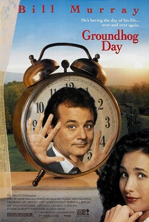
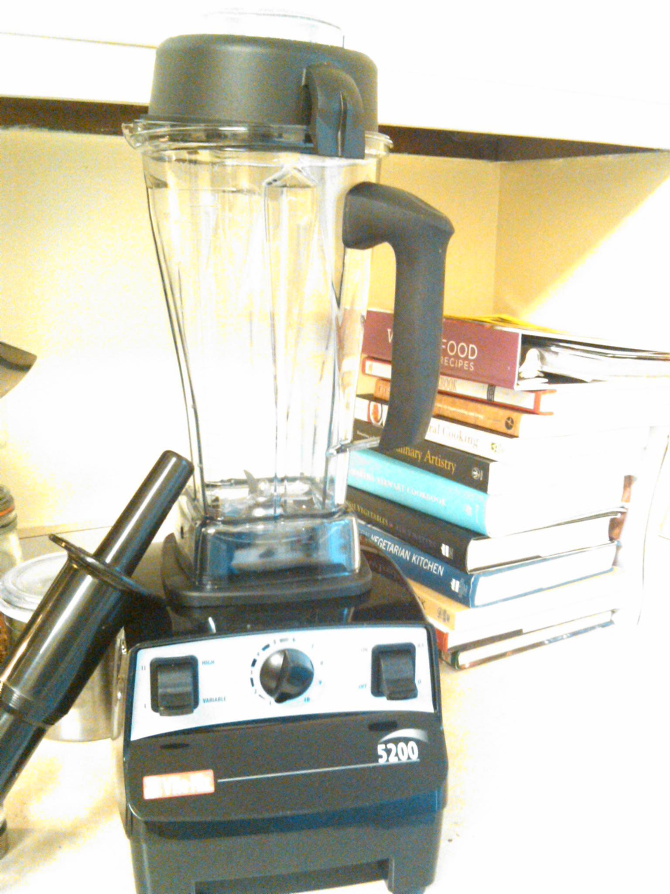
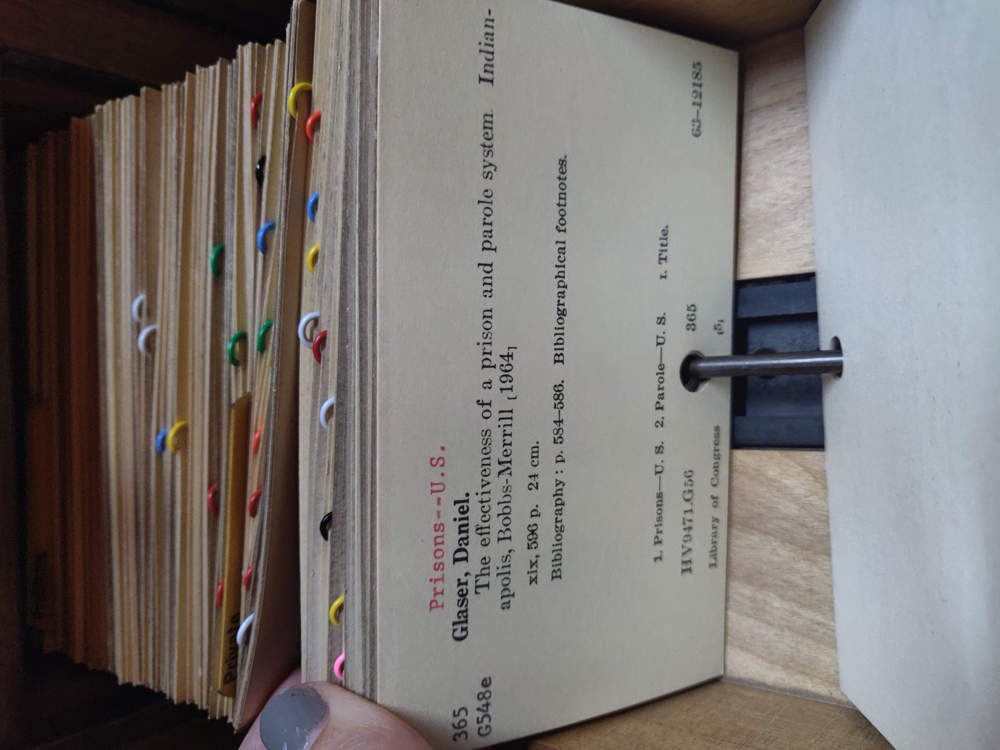

Every Session Is Groundhog Day For Your AI A talk about why your agent never remembers you
"I got you, babe." · by Amit Prusty
Claude Community Meetup · Amsterdam · June 2026

Amit Prusty
Staff ML Engineer / AI Lead · Edelman · Amsterdam, via Singapore
I build the operating layer around AI agents — context, evals, workflows, production adoption.
OSS · github.com/cote-star — agent-context repo maps · chorus multi-agent · latchkeyd local control
Senior ML Engineer · Senior Data Engineer · Senior QA Lead
any major EU city — or fully remote. find me after the credits roll.
We keep mistaking
context for continuity.
(you'll hear this line three more times. that's on purpose.)
Groundhog Day is the UX.
Memento is the mechanism.

GROUNDHOG DAY · what users feel
Every session wakes up fresh. No memory of yesterday.

MEMENTO · what actually happens
Leonard tattoos himself. Your agent tattoos itself with CLAUDE.md, indexes.
* posters © Columbia Pictures / Newmarket–Summit — low-res thumbnails shown as fair-use educational commentary on the films; removed from the published deck after the talk.
Frozen weights
The model was sealed last training run.
Anything it “learned” about you after that lives outside the model.
The weights don't know you exist.
→ READ-ONLY
$ model.memory_of_you
→ ENOENT
Alignment teaches manners,
not memory
RLHF teaches the model how to behave like it knows you.
Friendly tone. Helpful structure. Says “great question.”
It doesn't teach the model that you exist.
Your agent's warmth is generic.
Yours is the same as everyone else's.
The harness is the prosthetic
The model is a notepad. The harness pretends it's a brain.
System prompt · tool definitions · context injection · compaction · file reads · skills · hooks · memory files — all the harness.
"Your context isn't your context." — Mario Zechner, Building pi in a world of slop
We're asking a notepad to be a hippocampus.
With a 200K–1M token cap. And it changes between releases.
Things the harness does behind your back
...where were we?
Two harnesses. Same problem.
Different organs.
CLAUDE CODE
Continuity compressed into the main loop. Runtime-first.
one strong pulse
CODEX
Continuity split across thread / rollout / state DB. Policy-first.
multiple weak signals
Neither is in the model. We keep mistaking context for continuity. → agentway.dev
Long context is a bigger desk,
not a better memory.
Liu et al. — models use beginning & end of long context better than the middle.
Cache isn't memory. It's the model saying "I've seen this prefix before."
That's déjà vu, not understanding.
Compaction is REM sleep
with data loss.
Humans consolidate during sleep. Agents don't sleep — they get /compact'd.
Compaction is summarization. Summarization is lossy.
The dream you remember in the morning is not the dream you had.
The agent's hippocampus is a markdown file.
Groundhog Day alone is sad. Groundhog Day multiplayer is chaos. That's what chorus is for.
The platforms started shipping the tattoo.
Everything on the last wall was duct tape. The first-party parlors are now open:
MEMORIES
Leonard finally got licensed tattoo artists.
He still wakes up not knowing you — but now the notes survive the night.
Codex memories: "Memories are off by default and aren't available in the European Economic Area, the United Kingdom, or Switzerland at launch."
your agent's hippocampus is geo-blocked in this room.
Your codebase is not a smoothie.

VECTOR RAG
Chunk it. Blend it. Embed it. The document is now a slurry.

VECTORLESS
Keep the structure. Let the model navigate. PageIndex: tree-based reasoning.
→ github.com/VectifyAI/PageIndex
Where do the tattoos live?
Where should shared memory live?
In the repo, in git. Treat memory like code: diffed, reviewed, shipped with the project. That's why everything converged on files — every clone is a brain transplant, on purpose.
Personal vs team — who sees what you taught it?
Two layers are forming: private memory dirs for what one agent learned, repo packs for team truth. Keep them separate — mixing them is how preferences leak into shared maps.
Code changes — who invalidates stale memory?
Freshness gates in CI can flag drift. Mostly, though: still nobody. Why it matters: a stale map routes the agent wrong faster than no map at all.
What if prompt injection writes to memory?
Today's only defense: review memory diffs before they land. Why this one matters most: poisoned context dies with the session — poisoned memory survives into every future one.
Harness engineering is becoming a real discipline. Not just vibes.
→ walkinglabs.github.io/learn-harness-engineering · arXiv:2605.18747
We keep mistaking context for continuity.
three positions · come argue with me at the bar
our agents are only now getting a biography
Groundhog Day (1993) © Columbia Pictures.
Memento (2000) © Newmarket Films / Summit Entertainment.
removed from the published deck after the talk.
a projector chirp — and these end titles
in the mood of Memento's end titles (the real score is © David Julyan —
we synthesized our own). all five cues live in Web Audio. no audio files harmed.
they may or may not have been relevant.
Senior Data Engineer · Senior QA Lead